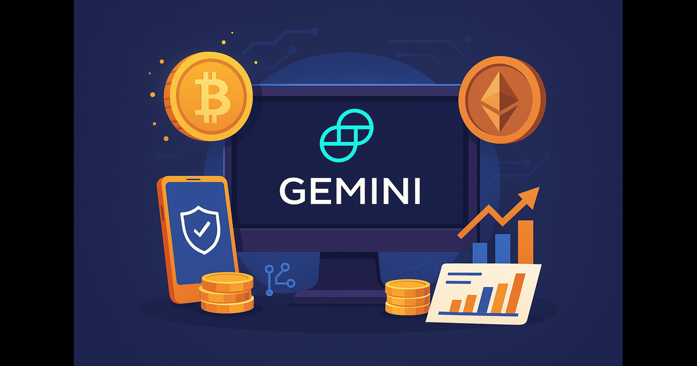

VPN Signup with Crypto (2025)
Get started with a VPN that respects your privacy. This guide shows you how to create an account, pay with crypto, and begin private browsing in minutes.

How to Start Using a Crypto-Friendly VPN
Looking for a VPN that doesn’t require a credit card or billing address? This guide shows you how to onboard with top VPN providers that accept BTC, ETH, or USDC for fast, anonymous account creation.
Why Choose a VPN That Accepts Crypto?
Crypto payments give you full privacy. No name, no financial records, and often no email required. VPNs like NordVPN, ExpressVPN, and Surfshark are leaders in crypto onboarding and have proven privacy credentials.
Step-by-Step VPN Signup
- Go to Surfshark or any trusted crypto VPN provider.
- Pick a plan (monthly or yearly). Crypto deals often offer longer-term value.
- Choose “Pay with Crypto” — options include BTC, ETH, USDC, and sometimes XMR.
- Enter a throwaway or optional email if needed. Some VPNs allow full anonymity.
- Pay, activate, and download your VPN app. Done.
Tips for Fast Setup
Use a privacy-friendly browser (e.g., Brave) for signup. Screenshot your confirmation. Avoid VPNs that require personal billing info.
VPN + Crypto FAQs
- Is paying with crypto for a VPN legal? Yes — it's globally accepted, but always follow local laws.
- When do I get access? Immediately after payment — no ID needed.
- Which coins are accepted? BTC, ETH, USDC are most common. Some VPNs accept XMR for extra privacy.